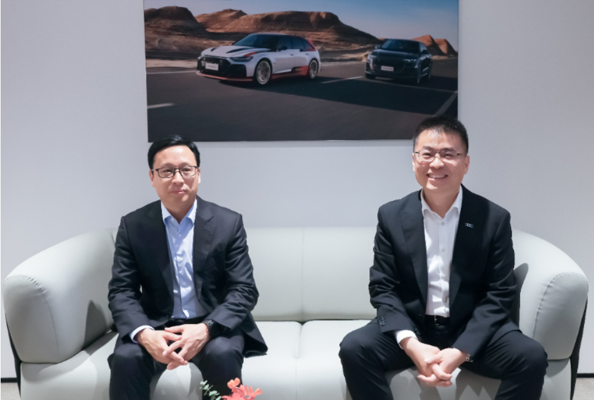

4月23日，第二十一届上海国际汽车工业展览会拉开帷幕，汽车领域的智能化技术创新成为本届车展的亮点之一。车展首日，华为智能汽车解决方案BU CEO靳玉志与一汽奥迪销售有限责任公司执行副总经理李凤刚共同接受了新华网记者的采访，围绕双方智能化领域合作、“油电同智”趋势以及硬科技与软科技协同创新等话题展开深度对话。

谈及奥迪与华为乾崑合作的缘起，李凤刚表示，双方从2019年就开启了合作。当时，奥迪已经感知到了中国汽车行业快速变化的趋势，意识到了未来可能存在的竞争压力。作为一个全球传统豪华汽车品牌，一汽奥迪在顺应市场转型发展的过程中设立了一个小目标，就是打造最懂中国用户的豪华品牌。“在这一过程中，我们深刻感受到中国用户对于先进软科技的需求在不断提升。所以我们在巩固自身硬科技实力的同时，一定要去补齐我们的短板。因此我们就主动找到中国科技行业中的头部企业——华为，双方共同合作，满足用户对于豪华汽车品牌的新需求。”李凤刚说。
靳玉志表示，在汽车行业面向未来的变革过程当中，不论是油车还是电车，都需要智能化。豪华品牌之所以豪华，正因为其在质量、操控性、安全等方面具有非凡的品质。华为乾崑选择与奥迪合作，就是希望将奥迪这一豪华品牌的优秀造车基因，与华为乾崑智能化的能力结合起来。“奥迪要求是非常高标准的，而高标准意味着高质量。”靳玉志说，“双方强强联合，都把各自的最强的长板拿出来，打造真正面向未来的豪华汽车。为消费者带来新时代最出众的豪华汽车选择。”
汽车产业智能化变革正在加速。工业和信息化部数据显示，2024年，中国具备组合驾驶辅助功能（L2级）的乘用车新车销售占比已达57.3%。汽车行业的竞争焦点正在转向智能化，企业需要通过持续技术创新提升核心竞争力和产品附加值。
一汽奥迪在坚守“硬科技”的同时，也积极拥抱智能化。在李凤刚看来，作为一个拥有百年造车经验的全球品牌，相比其他很多车企，奥迪对品质的要求更高。面对智能化转型的挑战，一汽奥迪始终坚持长期主义，始终将安全放在第一位。他强调，奥迪所有的技术创新首先要以用户用车安全为前提。在涉及到安全的创新方面，奥迪都会非常非常谨慎，始终对用户负责。
因此，在智能化升级方面，找到合适的合作伙伴对于一汽奥迪非常重要。只有这样，才能达到奥迪高标准的技术要求。李凤刚表示，在与华为乾崑合作的5年多时间里，一汽奥迪始终坚持守正创新，“我们一定先把自身这种安全和硬科技的优势巩固，然后再去创新。”同时，通过与华为乾崑的合作，一汽奥迪也积极地向科技行业和消费电子类公司学习，双方不断相互磨合，为合作找到一个更好地结合点与平衡点。
在采访中，靳玉志同样提到，华为将ICT的技术引入到汽车中，标准非常清晰。“我们做汽车智能化的所有电子产品都是车规级的，具有更高的可靠性要求和使用时长。这样才匹配我们车规级的使用场景和对可靠性、安全性的要求。”同时，可以通过软件升级，不断地提供更新的功能，为用户带来更多价值。
面对中国汽车市场快速变化的发展趋势，李凤刚坦言，作为拥有百年历史的传统豪华品牌，“过去的成功也难免成为转型的一种困难。”他认为，随着过去几年市场的变化，整个团队都设身处地地感受到了竞争的压力，也清晰地看到了自身的优势和不足。
为了实现“打造最懂中国用户的豪华品牌”这一目标，奥迪正在进行一场从内心深处开始的改变。“比如我们在品牌建设和沟通上，更加贴近市场和年轻用户需求；更加注重社交媒体和线上营销；向很多的新势力学习，把客户体验做得更好。”他说，“从产品上，我们不断地与中国客户沟通，把客户需求与研发人员和欧洲本部做更多的沟通。同时，通过与像华为这样的中国头部企业开展更多合作，大家也带给我们很多的变化。”
正如李凤刚所言，“与领先科技企业携手同行，可以快速实现技术互补和跨界创新，为用户带来更智能、舒适、安心的出行体验。”可以看出，奥迪与华为的强强合作，体现着传统豪华品牌在智能化浪潮中的创新实践，为传统车企提供了“创新转型样本”，也书写着奥迪品牌在汽车新时代的辉煌新篇章。